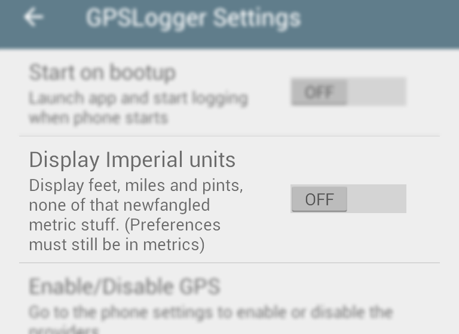
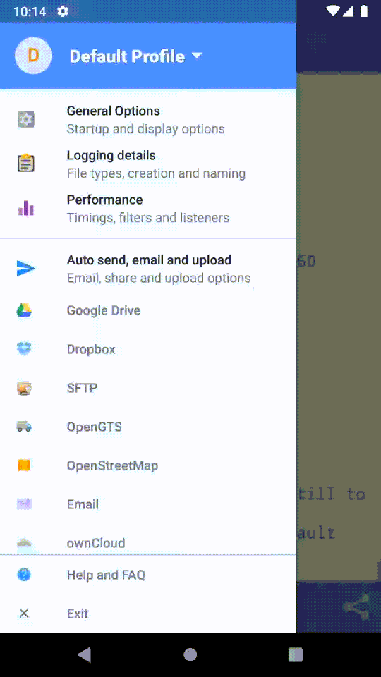
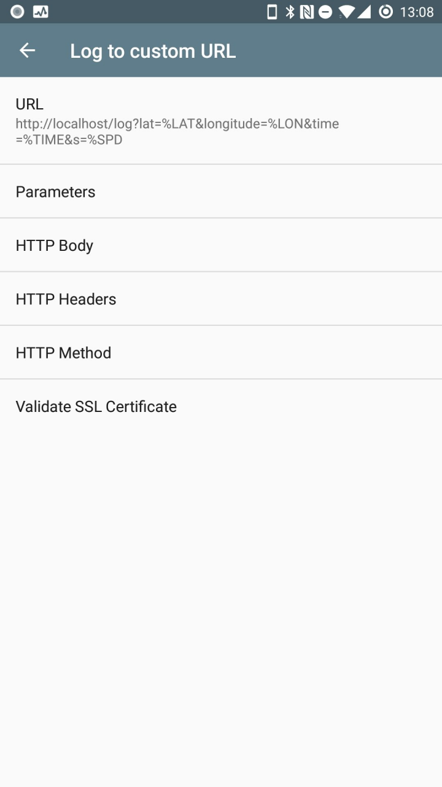

Quick Tour
Main Screen

Use the views dropdown to navigate between the different presentations.
While you are logging, the green indicator will stay on.
The spinner only appears when the GPS is trying to get a fix.
Menus

Many menu items
Profiles - Group preferences under profile names, such as default, nighttime, trekking, etc.
General options - Startup, imperial, debug file and version info
Logging details - File formats, folder, new file creation, frequency, accuracy
Auto send, email and upload - Settings for various destinations such as Custom URL, SFTP, OpenStreetMap, FTP, Dropbox etc
Simple view

Shows your last recorded GPS point, updates when new point available
Tap any field to highlight the text
Big start/stop button. You can't miss it
Distance travelled is the total distance between all points.


Features
Can log to GPX, KML, CSV, NMEA and CSV formats. Can also log to a custom URL or just the screen.
Logs GPX points as tracks and track segments
Also logs speed, direction and altitude if available
Add a description to a point using the annotate menu, gets added as a waypoint
Configure time intervals between points
Configure a minimum distance filter between points or an accuracy filter
Notification icon with coordinates and quick actions
Uses cell towers for location when GPS is disabled
Selectively choose network, gps and passive location providers
Automatically upload or email the file at set intervals to destinations such as Email, FTP, SFTP, Dropbox, Custom URL, OpenStreetMap, ownCloud, OpenGTS.
Share location or log files via SMS/Email (and other apps such as Facebook or Twitter depending on what you've got installed)
Start logging on phone bootup
Invoke operations from Tasker or other automation apps.
You can give it a preset file with your own values for distribution
Multiple profiles with different settings are possible
Frequently asked questions and issues
Why is it taking so long to find a fix?
There can be several reasons reasons for this.
New location - if you are at a new location after a long flight, the GPS on your phone can take a while to reorient itself. Try running GPSLogger at high frequency until it does find a location.
Interference - there may be structures nearby blocking your signal.
Mid flight - if you are in a commercial aircraft, you are probably traveling too fast for your phone's hardware to keep up with the GPS signals.
You can read more a little more on what's involved here
Why are the fixes sometimes inaccurate?
It all comes down to your hardware, settings and environment. The accuracy is only as good as your phone's GPS chip. Some phones may have 4 meter accuracies, some have 500 meters. Also, using GPS satellites will give you better accuracy but take a longer time; using network location will give worse accuracy but is quicker. You may also want to check your environment, as there can be inaccuracy due to clouds, buildings, sunspots, alien invasion, etc.
My time interval has passed, but no point was logged
Sometimes, the app will not log for long periods of time
Sometimes your specified time interval will have passed, but no point was logged. There are a few reasons this could happens.
On Android 6+ (Marshmallow), a new feature called doze mode was introduced, which severely restricts activity on the device after certain periods of inactivity. Be sure to grant the app permission to run in the background by disabling battery optimization. If you aren't sure, or if you've denied this permission you can disable battery optimization for GPSLogger manually which does not bypass doze mode but occasionally provides logging windows in which to work. It will not make a great difference though, doze mode is quite aggressive.
Many vendors are also known to introduce their own additional poorly written but aggressive battery optimization mechanisms. App developers don't have a way of detecting or working around these, and unfortunately the apps receive all the blame. You can see some partial workarounds on the Don't Kill My App site
The GPS system will have attempted to find its location and given up after a while. This in turn means that Android OS will not have given a location to GPSLogger
The accuracy was below your Accuracy filter settings, or the distance was below your Distance filter settings, so GPSLogger didn't log it. You can try setting a retry interval in which GPSLogger can wait for a matching accurate point to show up and then use it. Or you can allow for slightly more inaccurate fixes - your mileage may vary as every phone is different in terms of how accurate a fix it can get on a regular basis.
On Android 8+ (Oreo), the LocationManager has been limited: "Location updates are provided to background apps only a few times each hour."
In summary, to try to maximize the locations you can receive, be sure to do the following:
- Grant all location permissions to the app. This includes the background ("Allow all the time") permission.
- Disable battery optimization for GPSLogger
- See the Don't Kill My App site website
- Keep the app in the foreground before locking the screen
I am displaying imperial units but why isn't it logging imperial to the file?
What are the units in which the values are logged?

When logging to file, the units are always in SI units - meters and seconds.
Any imperial units are only for display purposes and nothing else. The same applies for times and distances which may appear as km/h or m/s - these are purely for display.
Where is the file being logged? How do I get to it?
What is the default folder path?
Due to recent restrictions, the default GPSLogger folder is different per device. You can see it on the simple/detailed screens and it may be something like
Example:
/storage/emulated/0/Android/data/com.mendhak.gpslogger/files/
Example:
/sdcard/Android/data/com.mendhak.gpslogger/files/
The initial part will be different for your device.
If you have a file explorer installed, you can click on the folder paths in the simple/detailed screens.
To copy the GPSLogger files, you can connect your phone to your computer and mount the SD card, then copy straight from the above folder. You can also change the default folder in the app settings.
Finally, note that due to the restrictions introduced in Android KitKat, any files in the default folder will be removed if you uninstall the app.
How to log to an external SD card?
Under logging details, pick the 'save to folder' dialog. You will need to use your SD card's serial number in the path - a file manager should be able to reveal this to you.
/storage/1b04-100a/Android/data/com.mendhak.gpslogger/files
You can also try:
/storage/1b04-100a/Download/gpslogger
and
/storage/1b04-100a/DCIM/gpslogger
Note that GPSLogger can only write to its application folders. Download and DCIM may be writeable, the app will warn you if it is not writeable. File explorers are able to write to any location but they make use of a special media hack which this app cannot rely on.
I've changed the settings, but it's still showing/using the old settings
If the app is logging, and you make changes to the settings, the changes will take effect after the next point is logged. This means that if you've set your interval as 1 hour, you have a long wait ahead of you. If you want the changes to take effect immediately, then stop logging and start it again so that the changes are refreshed.
What do the various settings mean? (Accuracy, retry interval for accuracy, etc)

Logging interval - How long to wait after a point has been logged to try logging again.
Distance filter - When a point becomes available, the app will check to ensure that this much distance exists between the previous and current points. If it isn't this distance, the point is discarded.
Accuracy filter - When a point becomes available, the app will check to ensure that this point has a minimum accuracy specified. If it does not match the specified accuracy, the point is discarded. This is useful if you are inside a building for a while.
Duration to match accuracy - When searching for a point, the app can continue searching for this many seconds until it finds a point that meets the accuracy and distance filter criteria above.
Absolute timeout - When searching for a point and trying over and over, the app will give up when this timeout is reached. This is useful for when you're inside buildings, GPS tends to keep searching and finding nothing.
Keep GPS on between fixes - Normally, the app stops using GPS between points, to save battery. This means when it's time to log the next point, the GPS needs to be 'woken up' again and this takes a little time. Keeping GPS on between fixes causes this 'wake up' time to be reduced.
How do I make the app last longer?
Are there any recommended settings?
Mainly, turn wifi off, turn mobile data off, turn background synchronization off, turn bluetooth off.
If you turn mobile data off, you'll probably want to inject aGPS data regularly, there are apps that can do it for you. You can also try going into airplane mode which turns many things off.
When it comes to choosing between location sources - GPS vs network - GPS will be more battery hungry, but has better accuracy; network location is easier on the battery but isn't as accurate.
For time intervals, consider using 60 seconds or more.
The app doesn't log at exactly x seconds as I've specified
It's how the Android OS has implemented its GPS system. When you say you want a point every 60 seconds (for example), that's actually a suggestion rather than an imperative, and so the time interval between GPS points is never guaranteed. GPSLogger has logic that checks the time difference, though, and will make sure that at least 60 seconds have passed before logging again. It is not meant for sub-second logging, as that will require aggressive wakelocks.
Why can't I remove the notification?

As of newer versions of Android, removing the notification will cause the service to be killed. As a result, the notification now needs to stay there. You may have seen a recent increase in the number of apps that need to sit in the notification bar for the same reason - to perform background services without being killed.
There is an option in the app's settings that allows you to remove the notification buttons if you want a smaller notification.
What settings are required for task managers?
Task managers don't like GPSLogger and will frequently kill the service.
Due to the varied nature of the way task managers and task killers work, I simply cannot help or advise with any problems where you have one of these installed, and would advise against it as well
How is this different from other logging apps?
It's meant to be more battery efficient. A lot of other apps, such as MyTracks, usually go with the assumption that you have a data connection available and your routes won't be very long. They use CPU wakelocks and log points extremely frequently with high accuracy. The aim of GPSLogger is to log points and stay quiet.
To put it another way, MyTracks or similar are better suited for runs; GPSLogger is suited for days out, hiking, photography.
How does this integrate with Tasker/Llama or other automation frameworks?
How to automate GPSLogger?
Controlling GPSLogger
If your automation app can send intents, you can use those intents to control GPSLogger and get it to perform a few actions.
To invoke it from Tasker, create a new action under Misc > Send Intent.
Action:
com.mendhak.gpslogger.TASKER_COMMAND
Extra:immediatestart:true(others below)
Package:com.mendhak.gpslogger
Class:com.mendhak.gpslogger.TaskerReceiver
Target:Broadcast Receiver
To invoke it from Automate (LlamaLab), create a Send Broadcast block:
Package:
com.mendhak.gpslogger
Receiver Class:com.mendhak.gpslogger.TaskerReceiver
Action:com.mendhak.gpslogger.TASKER_COMMAND
Extras:{"immediatestart" as Boolean:"true"}
To invoke it from your own Android code:
Intent i = new Intent("com.mendhak.gpslogger.TASKER_COMMAND");
i.setPackage("com.mendhak.gpslogger");
i.putExtra("immediatestart", true);
sendBroadcast(i);
These are the extras you can send to GPSLogger:
immediatestart- (true/false) Start loggingimmediatestop- (true/false) Stop loggingsetnextpointdescription- (text) Sets the annotation text to use for the next point loggedsettimebeforelogging- (number) Sets preference for logging interval optionsetdistancebeforelogging- (number) Sets preference for distance before logging optionsetkeepbetweenfix- (true/false) Sets preference whether to keep GPS on between fixessetretrytime- (number) Sets preference for duration to match accuracysetabsolutetimeout- (number) Sets preference for absolute timeoutsetprefercelltower- (true/false) Enables or disables the GPS or celltower listenerslogonce- (true/false) Log a single point, then stopswitchprofile- (text) The name of the profile to switch togetstatus- (true) Asks GPSLogger to send its current events broadcast
Shortcuts
The app comes with a Start and a Stop shortcut (long press home screen, add widget), you can invoke those from some automation apps.
GPSLogger Events Broadcast
Listening to GPSLogger
(Experimental feature) GPSLogger sends a broadcast start/stop of logging, which you can receive as an event.
In Tasker, this would look like:
Event: Intent Received
Action: com.mendhak.gpslogger.EVENT
From there in your task, you can look at the following variables
%gpsloggerevent-startedorstopped%filename- the base filename that was chosen (no extension)%startedtimestamp- timestamp when logging was started (epoch)
In a custom application, receive the com.mendhak.gpslogger.EVENT broadcast and have a look inside the extras.
Using the Custom URL feature
The Custom URL feature allows you to log GPS points to a public URL. This can be a third party API that accepts GET requests, or an application that you've written and are hosting on your own server.
https://myserver.com/log?lat=%LAT&long=%LON...
If your phone goes offline, then the app will queue these requests until a data connection becomes available.
You can add your HTTP body, HTTP header, HTTP method and basic authentication credentials in the Custom URL screen.
If you use a self signed SSL certificate, be sure to validate it first.
If you check the 'POST' checkbox, then the querystring parameters are sent in the HTTP POST body as:
a=b&c=d&e=f&...
How can these GPS log files be used?
How do I geotag photos with a GPS log file?
The GPS files produced by this app are generally used for processing other things.
A common use case is to geotag photos. Many cameras, especially SLRs, don't have built-in GPS. After a day (or days) out of photography, you may have hundreds of photos that need to be geotagged so that their locations can appear properly when used elsewhere.
I have had success with:
- GeoSetter - GUI, comprehensive options with map display
- ExifTool - command line, lots of options
- Lightroom's map module - very basic and limited
There are of course other uses of the produced files, these are a few I've seen over the years; it's usually a combination of a log file produced from GPSLogger with a secondary software to process the files.
- Recording your hike, paragliding, flight
- View it in Google Earth, Google Maps
- OpenStreetMap tracing
- Track fleets of trucks or vehicles
- Volunteer organisations use it as rescue reports
- Drivers and salespeople using it as a timesheet
- Tracking of geocaches, gravestones, repair sites, etc.
- Tracking friends and family on holiday
- Recording gravestone locations
Programmatic access
There is a project that can expose the GPX files in Dropbox as a RESTful API, and a hosted Heroku app.
Can I use your app in a research project?
This is actually the most commonly asked question! Yes, feel free to use GPSLogger in your research.
The source code is available on Github if you want to dig through it. Feel free to link back to the Github repo for credit/citation.
What are profiles?
Profiles are basically different settings, grouped under a name. For example you can have a night profile and a trekking profile with different logging frequencies, and switch between the two when you need to.
Add and Delete Profiles

Tap the profile header and then "Add profile" to create a new profile. The new profile will have the same settings as the one you're currently on. You can then modify a few settings and those should be specific to your new profile.
Conversely, any settings you change in one profile won't automatically be saved in other existing profiles. It is recommended that you do your basic setup in the Default Profile first.
You can delete a profile by long pressing it.
Save your current settings as a profile
Tap the profile header and then "Save" - this will save your current settings to a .properties file in your current GPSLogger directory. The file is named after your profile name. For example, a profile named xyz after being saved will result in xyz.properties
You can copy this file or export it via the main share menu.
Also note - the current profile's settings are automatically saved whenever you switch between profiles.
Creating a profile manually
You can create your own .properties file and put your key value pairs in it.
For example, in the file you can put accuracy_before_logging=42 and that will reset the Accuracy Filter to 42 meters each time the application starts. There are many properties that can be applied and you can glean a full list here.
The most common examples of properties would be log_gpx, log_kml, time_before_logging, opengts_* for OpenGTS settings, smtp_* for email settings.
Load Profiles by clicking a link

You can also load a profile in GPSLogger by clicking a link on a web page. This is also an easy way to provide your users or yourself with a preset profile - all they need to do is click a link on a page, no typing or pasting.
Create a .properties file with your settings in it - see instructions. Host it at an accessible URL, self signed URLs will not work here.
You will then need to host a web page with a hyperlink to that file in it, with this structure.
<a href="gpslogger://properties/https://www.mendhak.com/test.properties">Download this profile</a>
Basically gpslogger://properties/ followed by the actual URL of your .properties file.
Due to deficiencies in the Chrome browser, this needs to be a hyperlink on a webpage. The link must be clicked in a browser (Firefox, Chrome) on their Android device.
Load Profiles from a URL

You can load a profile with your settings from a URL. This is also an easy way of providing your users or yourself with a preset profile.
Create a .properties file with your settings in it - see instructions. Host it at an accessible URL, self signed URLs will not work here.
To load the profile from the app, press the 'Default Profile', which switches to the profile menu, then choose 'From URL'. In the dialog, give the URL of a properties file. GPSLogger will attempt to download the file, switch to it as a profile and apply the properties.
Load profiles from a file on your device
How can I define a preset file with my own values?
You can also share profiles using a file on the device.
If you create a file in the GPSLogger default directory, a profile will appear in the menu named after the file. For example, xyz.properties will appear as xyz.
Special profile - gpslogger.properties
If you create a file in the GPSLogger default folder or specifically at /sdcard/gpslogger.properties, then GPSLogger will read this file each time it loads and apply those settings to the application, overriding whatever settings you have currently.
Troubleshooting
Sometimes the app might not behave in an expected way.
You can troubleshoot it yourself by going to General Options and enabling the Write to debug file option.
Next, reproduce the behavior or problem, and this creates a debuglog.txt file in the GPSLogger folder.
You can then grab the file off your phone and have a look through it, or email it to yourself from the same screen (Attach debug log to email). Be sure to turn it off afterwards as this file grows very fast.
Custom SSL Certificates

If you use self signed certificates or custom CA certificates in Custom URL, OwnCloud, OpenGTS, FTP or SMTP then you will need to get GPSLogger to recognize and store your custom certificates.
It's easy. Just go into a setting screen where you have specified a custom SSL URL or server, and click Validate SSL Certificate. You will be prompted with the certificate's details, you can then choose to accept; the certificate will be stored in the local keystore.
This validation is required as it's a security best practice. It helps protect your information between your device and the server, it prevents attackers from listening in. The Google Play Store is also asking developers to be stricter with SSL based verifications.
In the case of OwnCloud, OpenGTS and Custom URL, the certificate must match the domain you're connecting to. In other words, if your certificate is issued to example.com then the URL you are connecting to must match example.com. More specifically this means that the certificate Common Name or Subject Alternative Name must match the host of the URL you are connecting to.
Why does GPS drift when I am stationary?
Why does my GPS speed sometimes show massive spikes?
This is normal with GPS receivers, especially in areas where there are objects nearby (trees, people, buildings, mountains). GPS receivers receive their signals over multiple paths. The main path of course is the satellites themselves, but it also receives signals due to reflection off those nearby objects. The receiver now sees more signal sources than are actually present and based on various algorithms, chooses to believe one of them. Due to the reflected signals, the distance and clock offset from the satellite also differs and the calculation based on this is now slightly incorrect. Considering that there may be several satellite signals being reflected, the overall outcome is the GPS drift that you see.
To deal with this you can use the distance filter in the performance settings.
For more details on multipath, see this page.
Why do the log files sometimes have missing data fields?
Why is the altitude value missing?
A few fields such as pdop, hdop, vdop, geoidheight, ageodfgpsdata, dgpsid may not always appear in the logs produced. This is because they are read from the NMEA listener which is different from the actual GPS/GNSS listener provided by Android OS. Because they are not read simultaneously there can be periods where the NMEA listener reports nothing while GPS/GNSS continues as normal. In those cases, no additional data is available.
The altitude value may also go missing if you have MSL checked. This feature subtracts the geoidheight from the reported altitude. In cases where geoidheight is not available, the logic is to not report altitude at all, rather than report an incorrect value.
What happened to the Google Drive feature?
What happened to the Activity Recognition feature?
The app has been removed from Google Play and has moved to F-Droid. As part of F-Droid's Inclusion Policy, proprietary libraries are not allowed, only open source libraries are allowed. This meant that the Activity Recognition feature and the Google Drive feature had to be removed from the app.
While it may be possible to reimplement a Google Drive upload in the future, the Activity Recognition is unlikely to ever happen, unless an open source library for it gets created.
There may still be references to these features in screenshots, FAQ and dialogs. Please ignore those for now.
Logging to SMS or email
Logging to SMS (and email) is a frequently requested feature, however this has not been implemented for a few reasons. While logging can be set to be frequent (~1 second), sending an email or SMS every second would get this app banned very quickly and is also likely unsafe for the user.
Although this could be mitigated by implementing specific logic to not allow SMS and emails to be sent so frequently, this would dramatically increase the complexity of the code and the flow of logic.
Can you implement a specific feature?
Making feature requests
Please note that I work on GPSLogger in my spare time and I may not always have the time or resources to implement a feature. However, GPSLogger is open source. You are encouraged to contribute or get someone else to contribute a feature.
It's also worth mentioning that not every feature request can be catered to; every request is evaluated through the lens of whether it would benefit the majority of users, or whether it is an edge case specific to the submitter.
You can submit your feature requests on Github.
Other links
Submit your feature requests on Github.
Please note that I work on GPSLogger in my spare time and I may not always have the time or resources to implement a feature. However, GPSLogger is open source. You are encouraged to contribute or get someone else to contribute a feature.
Source code
Contribute translations on Crowdin
Licensed under GPLv2
Read the privacy policy
Open source libraries used
Donate Paypal
Donate Bitcoin


Custom URL
